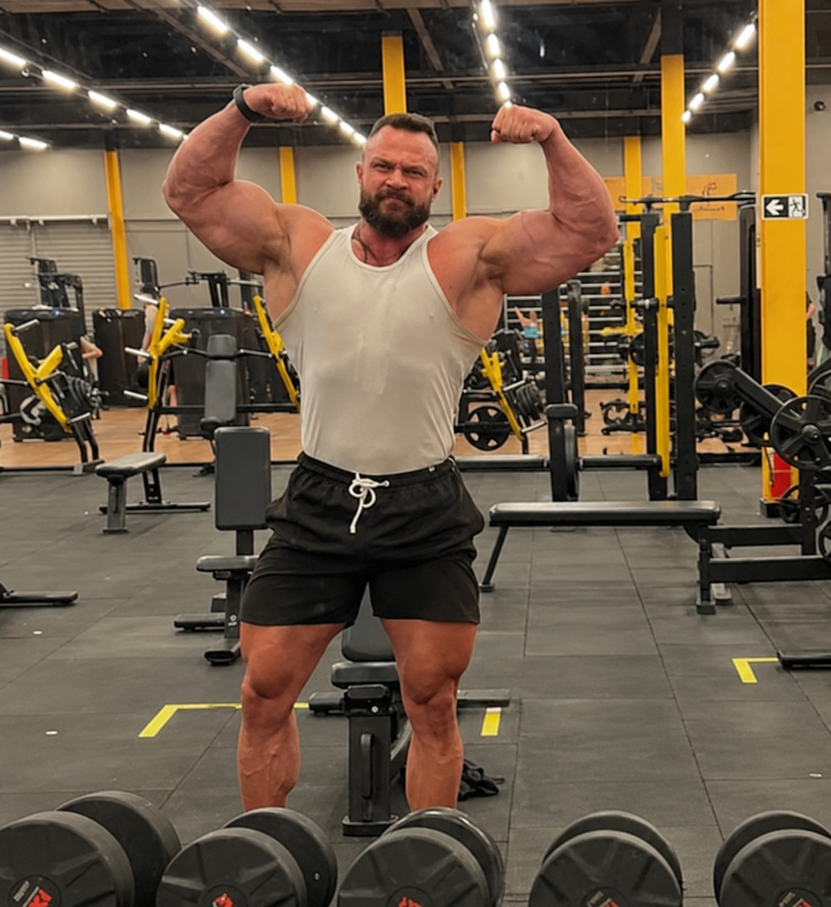

Treino com plano, não com achismo.
Acompanhamento individual pra quem quer evoluir de verdade — treino, avaliação e ajuste constante com base no que funciona pro seu corpo.
Falar no WhatsApp →

Quem te acompanha
Escreva aqui 2-3 parágrafos sobre a trajetória dele: há quanto tempo trabalha com treino, sua formação/experiência, e o que diferencia o jeito dele de acompanhar os alunos.
Fale também sobre o método: como ele estrutura o treino, como acompanha a evolução, e o tipo de aluno que mais se beneficia do trabalho.
- Formação ou certificação relevante
- Tempo de experiência prática
- Especialidade (ex: hipertrofia, emagrecimento, performance)
- Diferencial do acompanhamento
Como funciona a consultoria
Formas de acompanhamento disponíveis — ajuste os textos pra descrever exatamente o que ele entrega em cada uma.
Consultoria online
Treino personalizado, ajustado à distância com check-ins periódicos e suporte direto pelo WhatsApp.
Acompanhamento presencial
Sessões acompanhadas pessoalmente, com correção de execução e ajuste de carga em tempo real.
Avaliação física
Diagnóstico inicial pra entender ponto de partida, objetivo e montar o plano certo desde o início.
Metodologia explicada no canal Fábrica de Monstros
Dois vídeos direto do canal Fábrica de Monstros mostrando como funciona o método de treino na prática.
Sem plano, o shape estagna. Com o método certo, dispara.
Os dois gráficos mostram a evolução ao longo dos níveis — iniciante, intermediário e avançado — treinando sem acompanhamento e treinando com a metodologia.
Curvas ilustrativas — o ritmo real de evolução varia de aluno pra aluno, mas o padrão se repete: constância e ajuste vencem o achismo.
Arraste pra comparar
Troque as fotos pelas reais de antes/depois de cada aluno (mesmo ângulo e enquadramento nas duas fotos) — passe pros outros alunos nas setas ou nos pontinhos.
Arraste o controle pra ver a transformação
O que os alunos falam
Acompanhe o dia a dia nos treinos
Antes de chamar no WhatsApp
Não. O plano é montado de acordo com o seu nível atual, seja você iniciante ou avançado.
Descreva aqui exatamente o que está incluso no acompanhamento.
Explique aqui as opções disponíveis (academia, casa, ao ar livre etc.).
Explique a frequência de contato, ajustes de treino e canal usado (WhatsApp, planilha, app etc.).